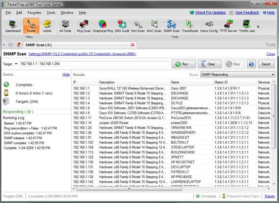
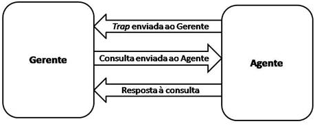

◉ Componentes Básicos do SNMP
Uma rede gerenciada via SNMP consiste de três componentes principais:
1 – Dispositivos Gerenciados
2 – Agentes
3 – Redes de gestão de sistemas(NMS, do inglês Network Management Systems)
Um dispositivo gerenciado é um nó da rede que contém um agente SNMP e que reside numa rede
gerenciada. Dispositivos gerenciados coletam e armazenam informações para a gestão e tornam
essas informações disponíveis para os NMSs por meio da utilização do SNMP. As vezes são
chamados de elementos de rede,podem ser qualquer tipo de dispositivo, incluindo, mas não
limitado a, roteadores e servidores de acesso, switches e pontes, hubs, telefones IP,
computadores hosts ou impressoras.
Um agente é um módulo do software de gerenciamento de rede que reside num dispositivo
gerenciado. Esse tem o conhecimento local de gestão da informação e a interpreta num formato
compatível com o SNMP.
Uma NMS executa as aplicações que monitoram e controlam os dispositivos gerenciados. Esse
fornece a maior parte dos recursos de processamento e memória necessários para a gestão da
rede. Um ou mais NMSs podem existir em qualquer rede gerenciada.
◉ Arquitetura SNMP:
Uma solução de gerência deve possuir uma arquitetura, na qual existem vários elementos gerenciados,
no mínimo uma estação de gerência, informação e protocolo dessa gerência. No caso da arquitetura
SNMP, ela consiste em agentes principais, subagentes e estações de gerenciamento.
Os elementos gerenciados são os dispositivos conectados a rede e os programas que rodam dentro
dela. Pode-se citar como exemplo de elementos gerenciados de hardware: modem e hospedeiros e de
software: sistemas operacionais, servidores, etc. Para que seja possível que os elementos sejam
gerenciados remotamente, eles devem possuir um software especial, denominados na arquitetura
SNMP como agentes.
As estações de gerência hospedam o software utilizado para gerenciar a rede. Ele é chamado de
“gerente”. Visando uma maior facilidade na manutenção e um melhor entendimento por parte dos
usuários da rede, as estações de gerência geralmente são centralizadas. Por isso, na maioria
dos casos, só há uma estação de gerência. Só é necessário usar mais de uma estação de
gerência quando a rede demanda mais recursos do que apenas uma estação é capaz de
fornecer. Essa estação pode obter informação de gerência fazendo uma sondagem dos agentes
ou então, recebendo diretamente a informação o agente. Dessa maneira, é atribuída à
estação de gerência (gerente) a capacidade de modificar o estado (visto como variável)
de um dispositivo remotamente. Além disso, a estação de gerência tem uma interface com
o usuário buscando facilitar a gestão da rede.

A comunicação entre os agentes e gerentes diz respeito à informação da gerência. Ela define quais dados podem
se tornar parâmetros nesse tipo de comunicação. Como exemplo, podemos citar: informação de erro de transmissão
e temperatura de um roteador.
Um protocolo de gerência é utilizado para a comunicação gerente-agente. Estão incluídas nesse protocolo as
operações de monitoramento e de controle da rede. As operações de monitoramento fazem a leitura da informação,
enquanto as operações de controle mudam a informação que está no elemento que foi gerenciado.
Acima de tudo, quando uma gerência de rede é adicionada a um sistema, deve-se providenciar que a influência
sobre a operação do dispositivo gerada a partir de sua implementação seja mínima. Felizmente, uma vantagem do
SNMP é que sua solução de gerência é muito simples. O que há de complexo, se concentra apenas nas estações
de gerência.
A arquitetura está baseada em três documentos. São eles:
• Structure of Management Information (SMI);
• Management Information Base (MIB);
• SNMP.
Quando uma conversa entre os agentes e o gerente (iniciada por este) é feita, uma operação chamada de polling
(sondagem). As sondagens são consultas feitas de tempos em tempos pelo gerente requisitando do agente a
informação de algumas variáveis de gerência vitais para o funcionamento da rede. Por meio desse processo de
aferição de informação são detectados funcionamentos inesperados da rede e erros de comunicação. Raramente
um agente pode dar início a uma comunicação por meio do disparo assíncrono de traps que sinalizam a ocorrência
de eventos inesperados.
O protocolo SNMP trabalha conforme um modelo de operação bem simples, chamado de modelo “fetch-store” ou “modelo
de leitura escrita”. Consistindo fundamentalmente de dois comandos básicos para realizar essas tarefas: GET
e SET.
◉ Agente Principal:
Um agente principal é um pedaço de software rodando num componente de rede SNMP, por exemplo, um roteador que
responde às solicitações SNMP da estação de gerenciamento. Nesse sentido, esse age como um servidor, na
terminologia da arquitetura cliente-servidor, ou ainda como um daemon, na terminologia do sistema
operacional. Um agente principal depende de subagentes para fornecer as informações sobre a gestão de uma
funcionalidade específica. Agentes principais também podem ser referidos como objetos gerenciados.
O agente pode ser um programa separado (um servidor, em linguagem Unix), ou pode ser incorporado no sistema
operacional (por exemplo, IOS Cisco num roteador, ou o sistema operacional de baixo nível que controla
um no-break). Atualmente, a maioria dos dispostivos IP vêm com algum tipo de agente SNMP estruturado
internamente. O fato de a difusão dos agentes SNMP nos dispositivos ser ampla, faz com que o trabalho
do administrador da rede seja reduzido, uma vez que os seus agentes já se encontram implementados nos nós
que irão compor a sua rede.
Tal elemento de software fornece informações de gerenciamento à NMS (ao gerente), mantendo o controle sobre
vários aspectos operacionais do dispositivo. Por exemplo, um roteador é capaz de acompanhar o estado de cada
uma das suas interfaces: quais estão acima, quais estão abaixo, etc. Quando o agente percebe que um evento
prejudicial ao desempenho do dispositivo ocorreu ele pode enviar uma trap para a NMS. Essa trap se origina
no agente e é enviada ao gerente, a fim de que seja tratada adequadamente.
Alguns dispositivos irão gerar um tipo de trap “all clear” quando um transição de um estado de operação
inadequada se alterar para o estado de operação adequada. Essa informação se torna relevante ao passo que
confirma a resolução do problema, assim a NMS poderá saber se precisa ou não agir no sentido de tentar corrigir
o problema. O feedback dessa informação elimina atuações desnecessárias por parte da NMS.
◉ Subagente:
O subagente é um pedaço de software rodando num componente SNMP que implementa a funcionalidade de gerenciamento
de informações , esse é definido por uma MIB específica de um subsistema específico: por exemplo, a camada de
ligação da ethernet.
Alguns recursos do subagente são:
• Recolher a informação a partir de objetos gerenciados
• Configurar os parâmetros dos objetos gerenciados
• Responder às solicitações dos gestores
• Gerar alarmes ou armadilhas(traps)
◉ Gerente ou Estação de Monitoramento:
O gerente ou estação de monitoramento é o componente final da arquitetura SNMO. Esse funciona como o equivalente
de um cliente na arquitetura cliente-servidor. Emite pedidos de operações de gestão em nome de um administrador
ou de uma aplicação e também recebe armadilhas dos agentes.
Um gerente é um servidor executando algum tipo de sistema de software que pode lidar com tarefas de gerenciamento
de rede. Um gerente ou NMS (Network Management Station) é responsável pela pesquisa e por receber traps de
agentes. No contexto de gerenciamento da rede, a pesquisa é a consulta a algum agente por um pedaço de
informação, a qual pode ser usada a posteriori para saber se algum evento prejudicial ocorreu na rede. As
traps são formas de os agentes informarem aos gerentes a ocorrência de algum evento. Assim, a NMS, baseada
nas informações coletadas dos agentes, é responsável por tomar uma decisão e agir a fim de garantir o melhor
funcionamento possível da rede.
Por exemplo, quando o circuito T1 para a internet cai, o roteador pode enviar uma trap para a NMS. Por sua
vez, o gerente tem autonomia para adotar algumas medidas, tal qual a mudança da paginação para que o usuário
saiba que algo inesperado ocorreu.

◉ SNMPv1, SNMPv2 e SNMPv3
◉ SNMPv1:
O SNMPv1 SMI especifica o uso de uma série de tipos de dados do SMI-specific, que são divididos
em duas categorias:
◉ Tipos de dados simples
Três tipos de dados simples são definidos na SMI SNMPv1, os quais são valores únicos:
1. O tipo de dado inteiro(integer) é um inteiro no intervalo de -2 ^31 a 2 ^31 -1
2. Octer stringssão sequências ordenadas de 0 a 65.535 octetos.
3. Object IDs provenientes do conjunto de todos os identificadores de objeto atribuídos de acordo
com as regras especificadas no ASN.1.
◉ Tipos de dados de Aplicação vasta
Sete tipos de dados de aplicação vasta existem no SNMPv1 SMI: endereços de rede, contadores, medidores,
time ticks, opcacos, inteiros(integer) e inteiros sem sinal.
1. Endereços de rede representam um endereço de uma família particular de protocolos. O SNMPv1 suporta
apenas os endereços IP de 32 bits.
2. Contadores são inteiros não-negativos que aumentam até atingir um valor máximo e depois retornam a
zero. Em SNMPv1, um tamanho de 32 bits do contador é especificado.
3. Medidores são inteiros não-negativos que podem aumentar ou diminuir entre valores mínimos e máximos.
Sempre que a propriedade do sistema representada pelo indicador está fora dessa faixa, o valor do indicador
não varia mais que seu máximo nem menos que seu mínimo, conforme especificado no RFC 2578.
4. Um time tick um centésimo de segundo desde algum evento.
5. Opacos representam uma codificação arbitrária que é usada para passar strings de informações
arbitrárias que não estejam estritamente em conformidade com a linguagem usada pelo SMI.
6. Um integer representa um inteiro assinado com valor de informação. Esse tipo de dados redefine o
tipo de dados integer, que tem a precisão arbitrária no ASN.1, porém tem precisão limitada no SMI.
7. Um integer unsigned representa valores de inteiros de informação em módulo e é útil quando os valores
são sempre não-negativos. Esse tipo de dados redefine o tipo de dados integer, que tem sua precisão limitada
no SMI, porém arbitrária no ASN.1.
Tabelas MIB no SNMPv1:
O SNMPv1 SMI define quadros altamente estruturados que são usados para agrupar as instâncias de
um objeto tabelado(ou seja, um objeto que contém múltiplas variáveis). As tabelas são compostas
de zeros ou mais linhas, que são indexadas numa maneira que permite ao SNMP a recuperação ou
alteração de uma linha inteira por meio de um único comando, podendo esse ser: Get, GetNext ou Set.
◉ SNMPv2:
O SMI SNMPv2 está descrito na RFC 2578. Esse realiza algumas adições e melhorias em relação à
versão anterior(SNMPv1 SMI-especific), tais como: inclusão de bit strings, endereços de rede e
contadores, as bit strings são definidas apenas em SNMPv2 e engloba zeros ou mais bits nomeados
que especificam um valor. No SNMPv1 os contadores tem um tamanho fixo de 32 bits, já no SNMPv2
os contadores podem ser definidos também com 64 bits.
O protocolo SNMP opera na camada de aplicação(camada 7) do modelo OSI. O protocolo SNMP especifica
(na sua primeira versão) cinco unidades básicas de dados do protocolo(PDUs):
• GET REQUEST – usado para recuperar um pedaço de informação de gestão
• GETNEXT REQUEST – usado iterativamente para recuperar sequências de gestão da informação
• GET RESPONSE – usado pelo agente para responder que dados deve obter e definir os pedidos do gestor
• SET RESPONSE – usado para iniciar e fazer uma mudança para um valor do elemento de rede
• TRAP – utilizado para relatar um caso de alerta ou outros eventos assíncronos sobre um subsistema. No SNMPv1,
relatórios de eventos assíncronos são chamados de traps, ao passo que são denominados notificações nas versões
posteriores do SNMP. Os módulos MIB do SNMPv1, as traps são definidas usando a macro TRAP-TYPE; em módulos MIB
do SNMPv2, essas são definidas usando a macro NOTIFICATION-TYPE.
Outras PDUs foram adicionadas na segunda versão do protocolo SNMP, incluindo:
• GETBULK REQUEST – um rápido iterador usado para recuperar sequências de informação da gestão
• INFORM – reconhecimento de uma trap
Normalmente, o SNMP utiliza as portas UDP 161 para agente e 162 para o gerente. O gestor pode enviar
solicitações de qualquer porta disponível(porta de origem) até a porta 161 no agente(porta de
destino). A resposta do agente será reportada de volta a porta de origem. O Gestor receberá traps
na porta 162. O agente pode gerar as traps de qualquer porta disponível. Muitas distribuições podem
mudar isso,porém essa alteração não é sempre necessariamente verdade.
SMI no SNMPv2 (módulos de informação):
O SMI no SNMPv2 especifica também módulos de informação, os quais organizam um conjunto de definições
relacionadas. Existem 3 tipos de módulos de informação no SMI: módulos MIB, declarações de
conformidade e as declarações de capacidade.
• Os módulos MIB contêm definições de objetos gerenciados relacionados.
• Declarações de conformidade fornecem uma maneira sistemática de descrever um grupo de objetos gerenciados que
devem ser implementados a fim de garantir um padrão de conformidade.
• Declarações de capacidade são usadas para indicar o nível preciso de apoio que um agente reivindica no que diz
respeito a um grupo de MIB. A NMS pode ajustar seu comportamento em relação aos agentes de acordo com as
declarações de capacidade associada a cada agente.
SNMPv1 e SNMPv2 usam a noção de comunidades para estabelecer um grau de confiança entre os
agentes e os gerentes.
Um agente é configurado com três nomes na comunidade: somente leitura, leitura e escrita, e trap. Os
nomes de comunidade são essencialmente senhas; não há diferença real entre um caractere da
comunidade e a senha que você usa para acessar sua conta no computador. Os três nomes de comunidade
controlam diferentes tipos de atividades. Como o próprio nome indica, a sequência de comunidade
read-only permite ler valores de dados, mas não permite que você modifique-os. Por exemplo, ele
permite que você leia o número de pacotes que tenham sido transferidos através das portas em seu
roteador, mas não deixa alterar os valores dos contadores. O nome read-write da comunidade tem
permissão para ler e modificar valores de dados. Por meio desse, você pode ler os contadores,
redefinir os seus valores, e até redefinir as interfaces ou fazer outras coisas que mudam a
configuração do roteador. Finalmente, o trap permite que você receba armadilhas (notificações
assíncronas) do agente.
◉ SNMPv3:
A segurança tem sido a maior fraqueza do SNMP, desde o início. A autenticação SNMP nas versões 1 e
2 equivale a nada mais do que uma senha (string de comunidade), enviada em texto não criptografado
entre o gerente e o agente. Qualquer rede de segurança consciente ou o administrador do sistema
sabe que senhas de texto simples não oferecem segurança real. É trivial para alguém interceptar
a string de comunidade e, uma vez que ele a tem, ele pode usá-la para obter informações de
dispositivos na rede, modificar suas configurações, e até mesmo fechá-los.
O Simple Network Management Protocol Version 3 (SNMPv3) aborda os problemas de segurança que têm
atormentado tanto o SNMPv1 quanto o SNMPv2. Para todos os efeitos práticos, os endereços do SNMPv3
são as únicas mudanças orientadas à segurança, não há outras alterações no protocolo. Não há novas
operações; o SNMPv3 suporta todas as operações definidas pelas versões 1 e 2. Há várias novas
convenções textuais, mas estas são realmente apenas formas mais precisas de interpretar os tipos
de dados que foram definidos em versões anteriores.
A engine é composta de quatro partes: o expedidor, o subsistema de processamento de mensagem, o
subsistema de segurança, e o subsistema de controle de acesso. O trabalho do distribuidor é enviar
e receber mensagens. Ele tenta determinar a versão de cada mensagem recebida (isto é, v1, v2 ou v3)
e, se a versão é suportada, envia a mensagem de fora para o subsistema de processamento de
mensagens. O expedidor também envia mensagens SNMP a outras entidades.
O subsistema de processamento de mensagem prepara as mensagens para que sejam enviadas e extrai
dados de mensagens recebidas. Esse subsistema pode conter vários módulos de processamento de
mensagens. Por exemplo, um subsistema pode ter os módulos de processamento SNMPv1, SNMPv2 e
SNMPv3 pedidos. Ele também pode conter um módulo de processamento de outros modelos que ainda
não foram definidos.
O subsistema de segurança fornece serviços de autenticação e privacidade. A autenticação usa strings
ou comunidade SNMP (v1 e v2) ou autenticação baseada no usuário SNMPv3.A autenticação baseada em
usuários utiliza o MD5 ou o SHA, algoritmos para autenticar os usuários sem enviar uma senha em
claro. O serviço de privacidade usa o algoritmo DES para criptografar e descriptografar as mensagens
SNMP. Atualmente, o DES é o algoritmo utilizado, mas outros podem ser adicionados no futuro.
O subsistema de controle de acesso é responsável por controlar o acesso a objetos MIB. Você pode
controlar quais objetos um usuário pode acessar e as operações que ele está autorizado a realizar
sobre os objetos. Por exemplo, você pode querer limitar um usuário de read-write o acesso a certas
partes da árvore MIB-2, permitindo o acesso somente leitura para toda a árvore.
O SNMPv3 é definido pelo RFC 3411, RFC 3418(também conhecida como STD0062). O SNMPv3 adicionou
principalmente mais segurança e melhorias para a configuração remota em relação à versão anterior
desse protocolo. O SNMPv3 é a versão atual e padrão de SNMP a partir de 2004. O IETF tem designado
para o SNMPv2 um completo Internet Standard(IS), o maior nível de maturidade de uma RFC. O IS
considera as versões anteriores obsoletas. Em dezembro de 1997, o “Simple Times” publicou uma
série de artigos escritos pelos editores RFC do SNMPv3, explicando algumas idéias subjacentes
às especificações da versão 3 do protocolo.
O SNMPv3 fornece funcionalidades de segurança importantes:
• A integridade da mensagem para garantir que um pacote não foi alterado em trânsito.
• Autenticação para verificar se a mensagem é de uma fonte válida.
• Criptografia de pacotes para evitar espionagem por uma fonte não autorizada.
◉ Alcance das aplicações
Algumas aplicações que usam o SNMP:
• Acompanhamento em tempo real do dispositivo (sysUpTimeInstance).
• Inventário de versões de OS (sysDescr).
• Recolher informação da interface (ifName, ifDescr, ifSpeed, ifType, ifPhysAddr).
• Medição de transferência de interface de rede (iflnOctets, ifOutOctets).
• Consultando um cache ARP remoto (ipNetToMedia).